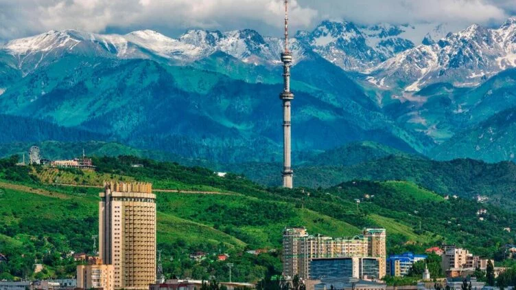

Алматы — елдің ғылыми, мәдени, тарихи, өндірістік және қаржы орталығы. 1997 жылы қаланы одан әрі іскерлік әрі қаржы орталығы ретінде дамыту туралы шешім қабылданды. 2006 жылы АӨҚО дамыту жөніндегі заңға қол қойылды. Басты қала құндылықтарының бірі — Көктөбе. Оңтүстігі қаламен шектесетін жоталы мекен. Ол 1070 метр биікте орналасқан. Көктөбенің басына шығу арқылы қаланың алақандағыдай көрінісін тамашалауға болады. Дәл осы жерде қаланың керемет түнгі көрінісінің куәсі бола аласыздар. 28 панфиловшылар паркі. Паркте атақты мемориал, естелік аллеясы мен мәңгі алау от бар. Зенков кафедралдық шіркеуі де осы паркте орналасқан. Қасиетті-Вознесенский православтық шіркеуін жергілікті сәулетші А.Зенков бірде-бір шегесіз 1940 жылы құрастырған. Ол әлемдегі ағаштан жасалған ерекше тоғыздықтың бірі болып саналады. Шіркеу 1911 жылы болған Рихтер шкаласы бойынша 10 баллдық жер сілкінісіне төтеп берген. Тәуелсіздік монументі — Республика алаңына көрік берген қайталанбас құрылыс. Аталған монументтің авторы — Шота Уәлиханов. Монументтің ұшында барысқа мінген алтын адам бейнесі бейнеленген. Ал монументтің айналасында қазақ даласының ежелгі тарихы толықтай қамтылған. А. Қастеев атындағы өнер музейі мен мемлекеттік орталық музей — республикамыздағы басты құндылықтардың бірі. Сонымен қатар қазақ халқының ұлттық инструменттерін топтастырған Ықылас атындағы ұлттық музей де ерекшелігімен көз тартады. Әлемге әйгілі Медеу мұз айдыны 1972 жылы құрылған. Ол қаладан 15 км. қашықтықта орналасқан.
